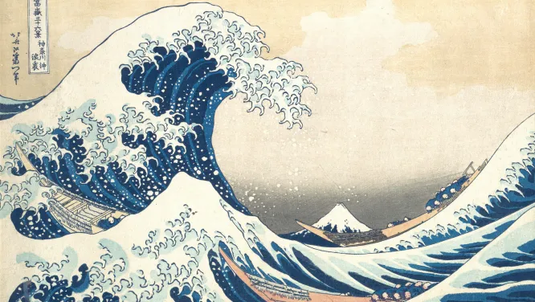

Le mont Fuji est un volcan culminant à 3 776 mètres de haut, ce qui est le point le plus haut du Japon. Ayant une symétrie presque parfaite, le mont Fuji, nommé ainsi par les premiers habitants du pays, les Aïnous, en référence à leur dieu du Feu nommé Fuchi.
Bien que dégageant calme et sérénité, le Mont Fuji est toujours considéré comme un volcan en activité et doit cette forme quasi symétrique à sa dernière éruption, appelée “grande éruption Hōei”, qui a commencé le 16 décembre 1707 et qui s’est terminée aux alentours du 24 février 1708.
Sa grandeur et sa beauté ont fait du mont Fuji une source d’inspiration pour bon nombre d'artistes japonais et du monde entier.
L'ascension du mont fut interdite aux femmes pendant des siècles, ce qui a permis aux artistes de jouer de se tabou lors de leurs représentations.
Le peintre et graveur Katsushika Hokusai,surnommé « Vieux Fou de dessin », réalisa la série des Trente-Six Vues du mont Fuji dont fait partis la célèbre vague de Kanagawa, dans les années 1820

Le lieu est classé en 2013 au patrimoine mondial de l’Unesco comme “lieu sacré et source d’inspiration artistique”.
J’aime beaucoup ce lieu puisqu’il dégage un sentiment de calme et de sérénité, c’est un lieu très spirituel, qui est considéré comme un lieu sacré dans plusieurs religions tel que le shintoïsme, la religion dominante au Japon. Les adeptes du shintoïsme considèrent que les sites naturels sont des lieux où résident les esprits, appelés kami. La déesse Sengen-sama est le kami résidant au mont Fuji, associée à la floraison des arbres, elle empêche le volcan d'entrer en éruption en échange du respect qui lui est dû.
Gravir le mont Fuji est une façon d'honorer la déesse Sengen-sama ainsi que de purifier son âme. L'ascension est, pour les Bouddhiste, une métaphore du chemin vers l’éveil, l'ascension commence dans la nature verdoyante et se termine dans les hautes terres rouges constitué de pierre volcanique considérée comme le monde des dieux de la mort.

Lieux similaires